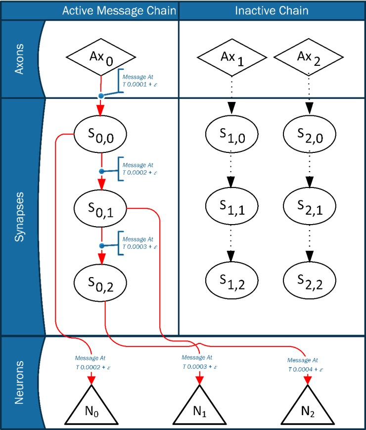

IBM TrueNorth Neuron
- IBM Enhanced the Leaky Integrate and Fire Neuron
- Added stochastic integration:
- Enables probabilistic leak and synapse integration
- Enhanced integration allows for conversion of Caffe models
IBM TrueNorth Hardware
TrueNorth is a neurosynaptic processor
- Developed through DARPA project
- Designed as a low power dedicated processor
Input Axons
Input axons are arranged in a connected grid
Synapse Grid

There are $256^2$ synapses per core
Synapses exist as a logical connection between axons and neurons.

One neuron connects to one axon
One axon connects to all neurons in a core
There are $4096$ cores in a TrueNorth processor
This gives $1,048,576$ neurons, $1,048,576$ axons, and $268,435,456$ synapes per chip
NeMo Implementation
Compared with IBM COMPASS
- NeMo is open source and freely available to use
- NeMo is able to simulate non-IBM hardware
- NeMo supports various hardware architectures - IBM Blue Gene as well as Intel
- Synapses send event messages to the neuron
- Neurons integrate the synapse weight at this point
- Previous voltage is saved in message


Synapse Message Part 2
- Neurons check to see if a "heartbeat" message has been sent
- Send heartbeat message if one has not been sent

Heartbeat Message Received
Neurons receiving a heartbeat message have either:
- Had synaptic activity this tick
- Have the potential to be self-firing
- Positive leak
- Negative leak with specific reset values
- And More!
- Neurons save current membrane potential in the message

Neurons then:
- Retreive current time
- Calculate the number of ticks since last activating
- Store this as $t_d$
Leak calculation:
while (td > 0) {
voltage = voltage - leakFunction();
td --;
}
Threshold, reset & fire
- Check if voltage $V_j$ is $>$ than threshold
- Send fire message
- Reset or check negative threshold
Nemo Event Flow

Given an event at $Ax_0$(axon 0):
- Synapse $S_{0,0}$ through $S_{0,2}$ activate
- All neurons integrate
- Neurons that have weight 0 for an axon do not send heartbeat
NeMo Experimental Results
Model Validation
- The IBM Model is able to reproduce Izhikevich's Interesting Biological Neurons
- We recreated two of these models using NeMo and IBM's published parameters
Tonic Bursting Function Results
These are two of Izhikevich's Neuron Models, reproduced by Cassidy et al.
Phasic Spiking Results
These are two of Izhikevich's Neuron Models, reproduced by Cassidy et al.
Performance Experements
Future Work
The next steps for nemo include:
- Integration with supercomputer simulation software (CODES)
- JSON neuromorphic core design support
- Pythonic I/O for integration with spiking neural network tools
References